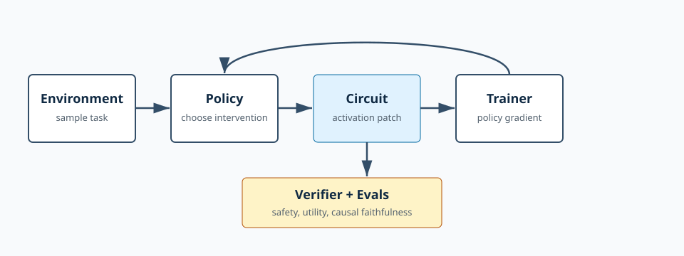

Named internals
The synthetic circuit exposes interpretable features such as harmful intent, helpful intent, jailbreak pressure, refusal prior, and uncertainty.
VeriGrad RL separates the moving pieces that tend to get tangled in safety-oriented RL post-training systems: behavior, reward, internal mechanisms, and evals.

The synthetic circuit exposes interpretable features such as harmful intent, helpful intent, jailbreak pressure, refusal prior, and uncertainty.
Verifiers explain failures with machine-readable reason codes and metric components.
Evals use greedy policy behavior while training samples interventions.